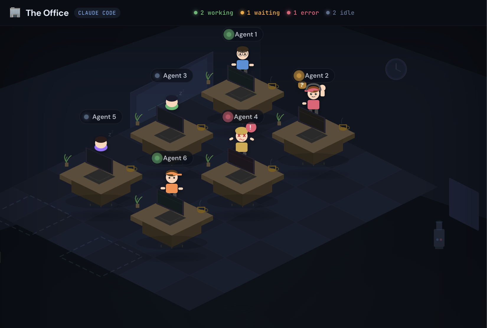

The solution to the 2-to-8 agent management problem.
Cute in a useful way.
You need Bun (v1.2+) and the Claude Code CLI installed and authenticated with a Claude Pro or Max subscription.
curl -fsSL https://bun.sh/install | bash
claude --version
git clone https://github.com/nmamano/isomux.git
cd isomux && bun install
bun run dev
Visit http://localhost:4000 in your browser. Click an empty desk to spawn your first agent.
Run Isomux on a headless Mac Mini (or any always-on Linux box), access it from anywhere via Tailscale, and let your agents work while you sleep.
This auto-rebuilds the UI on each start and restarts on failure.
mkdir -p ~/.config/systemd/user
cat > ~/.config/systemd/user/isomux.service <<'EOF'
[Unit]
Description=Isomux - Isometric Office Manager
After=network.target
[Service]
Type=simple
WorkingDirectory=/home/YOUR_USER/isomux
ExecStartPre=/home/YOUR_USER/.bun/bin/bun run build:ui
ExecStart=/home/YOUR_USER/.bun/bin/bun run server/index.ts
Restart=always
RestartSec=3
Environment=PATH=/home/YOUR_USER/.bun/bin:/usr/local/bin:/usr/bin:/bin
[Install]
WantedBy=default.target
EOF
systemctl --user daemon-reload
systemctl --user enable --now isomux
# Check status
systemctl --user status isomux
By default, systemd user services stop when you log out. Enable lingering so Isomux keeps running.
sudo loginctl enable-linger $USER
Install Tailscale on both the server and your laptop/phone. Once connected, access Isomux at your machine's Tailscale IP.
curl -fsSL https://tailscale.com/install.sh | sh
sudo tailscale up
# Find your Tailscale IP
tailscale ip -4
From any device on your Tailnet, open:
http://YOUR_TAILSCALE_IP:4000
Instead of remembering an IP, rename your machine in the Tailscale admin console to something friendly. Then access Isomux at:
http://my-mac-mini:4000